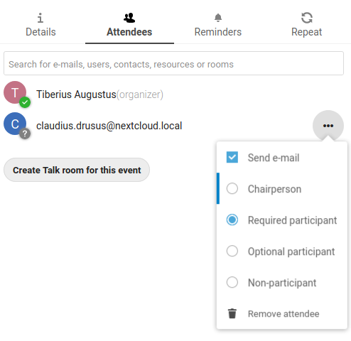

L’application Agenda n’est pas activée par défaut et doit être installée séparéement depuis l’App Store. Demandez à votre Administrateur de le faire.
L’appli Nextcloud Agenda fonctionne de la même façon que les autres applications d’agendas avec lesquelles vous pouvez synchroniser vos événements et calendriers Nextcloud.
Quand vous accédez pour la première fois à l’application Agenda, un agenda par défaut est généré automatiquement.
Si vous prévoyez de configurer un nouvel agenda sans importer de données existantes, alors créez un nouvel agenda.
Cliquez sur +Nouvelagenda dans le menu latéral à votre gauche.
Entrez un nom pour le nouvel agenda, par exemple “Travail”, “Maison” ou “Études”.
Après avoir coché la case, votre nouvel agenda est créé et peut être synchronisé sur vos appareils, recevoir de nouveaux évènements et être partagé avec vos amis et collègues.
Il est possible de changer la couleur ou le nom d’un agenda existant ou récemment importé. Vous pouvez aussi l’exporter et l’enregistrer sur votre disque dur ou le supprimer à tout jamais.
Note
Veuillez garder à l’esprit que la suppression d’un agenda est irréversible. Une fois supprimé, il n’y a aucun moyen de le restaurer, sauf si vous en avez gardé une sauvegarde sur l’un de vos appareils.
Cliquez sur les trois points verticaux du menu de l’agenda concerné.
You may share your calendar with other users or groups. Calendars may be shared with write access or read-only. When sharing a calendar with write access, users with whom the calendar is shared will be able to create new events into the calendar as well as edit and delete existing ones.
Note
Calendar shares currently can’t be accepted or rejected. If you want to stop having a calendar that someone shared with you, you can click on the 3-dot menu next to the calendar in the calendar list and click on « Unshare from me ».
Calendars can be published through a public link to make them viewable (read-only) to external users. You may create a public link by opening the share menu for a calendar and clicking on « + » next to « Share link ». Once created you can copy the public link to your clipboard or send it through email.
There’s also an « embedding code » that provides an HTML iframe to embed your calendar into public pages.
On the public page, users are able to get the subscription link for the calendar and download the whole calendar directly.
You can subscribe to iCal calendars directly inside of your Nextcloud. By
supporting this interoperable standard (RFC 5545) we made Nextcloud calendar
compatible to Google Calendar, Apple iCloud and many other calendar-servers
you can exchange your calendars with, including subscription links from calendar published on other Nextcloud instances, as described above.
Cliquez sur “+ Nouvel abonnement” dans le menu latéral à gauche.
Type in or paste the link of the shared calendar you want to subscribe to.
C’est tout. Les agendas auxquels vous êtes abonnés seront mis à jour à intervalles réguliers.
Note
Subscriptions are refreshed every week by default. Your admin may have changed this setting.
Les évènements peuvent être créés en cliquant dans la zone du calendrier où il est prévu. Dans la vue par jour ou par semaine de l’agenda, il suffit de cliquer et de “tirer” un évènement de la longueur souhaitée à l’endroit où il aura lieu.
Dans la vue par mois, il faut simplement cliquer une fois dans la journée où aura lieu l’évènement.
After that, you can type in the event’s name (e.g. Meeting with Lukas), choose
the calendar in which you want to choose the event (e.g. Personal, Work),
check and concretize the time span or set the event as all-day event.
Si vous voulez entrer plus de détails, tels que l”Emplacement, les Participants, des Rappels ou pour le définir comme évènement récurrent, cliquez sur le bouton Plus… pour ouvrir le panneau des options avancées.
Note
Si vous préférez que le panneau des options avancées s’ouvre toujours à la place du menu contextuel plus simple, il est possible de cocher l’option Passerl'éditeurd'évènementsimple dans la partie Paramètres&Importation de l’application.
Cliquer sur le bouton bleu Créer ajoute l’évènement à votre agenda.
If you want to edit or delete a specific event, you just need to click on it.
After that you will be able to re-set all event details and open the
advanced sidebar-editor by clicking on More.
Clicking on the Update-button will update the event. To cancel your changes, click on the close icon on top right of the popup or sidebar editor.
If you open the sidebar view and click the three dot menu next to the event name, you have an option to export the event as an .ics file or remove the event from your calendar.
You may add attendees to an event to let them know they’re invited. They will receive an email confirmation and will be able to confirm or cancel their participation to the event.
Attendees may be other users on your Nextcloud instances, contacts in your addressbooks and direct email addresses. You also may change the level of participation per-attendees, or disable email confirmation for a specific attendee.

Astuce
When adding other Nextcloud users as attendees to an event, you may access their FreeBusy information if it’s available, helping you to determine when is the best time slot for your event.
Attention
Only the calendar owner can send out invitations, the sharees are not able to do that, whether they have write access to the event’s calendar or not.
You can set up reminders to be notified before an event occurs. Currently supported notification methods are :
Email notifications
Nextcloud notifications
You may set reminders at a time relative to the event or at a specific date.
Note
Only the calendar owner and people or groups with whom the calendar is shared with write access will get notifications. If you don’t get any notifications but think you should, your Administrator could also have disabled this for your server.
Note
If you synchronize your calendar with mobile devices or other 3rd-party
clients, notifications may also show up there.
An event may be set as « recurring », so that it can happen every day, week, month or year. Specific rules can be added to set which day of the week the event happens or more complex rules, such as every fourth Wednesday of each month.
Le calendrier des anniversaires est généré automatiquement à partir des dates de naissance enregistrées dans vos contacts. La seule manière de modifier ce calendrier est de compléter les fiches de vos contacts, il n’est pas possible de le faire directement depuis l’application agenda.
Note
If you do not see the birthday calendar, your Administrator may have
disabled this for your server.

{kind=link}


{kind=link}